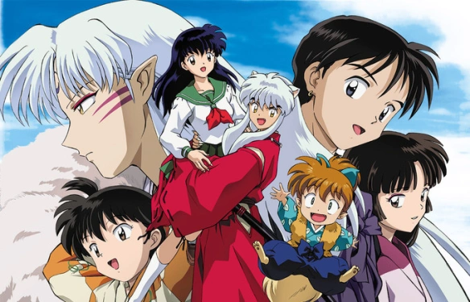
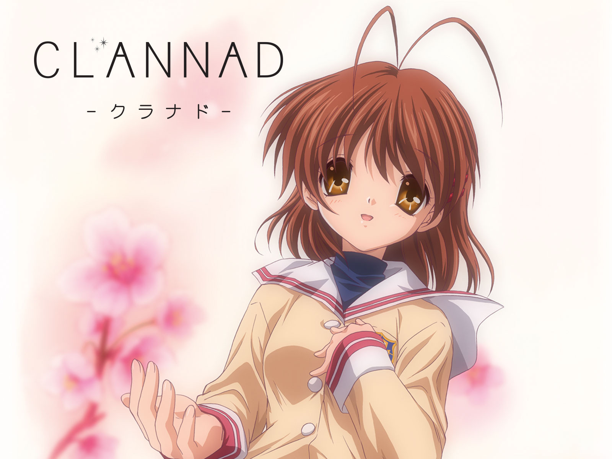

Anime Recomendados
INUYASHA
Inuyasha es un anime sobre Kagome, una chica que viaja a la era Sengoku de Japon. Allí, se encuentra
con Inuyasha, un medio demonio, y juntos buscan los fragmentos de la Joya de las Cuatro Almas para
evitar que caigan en manos equivocadas.
A lo largo de su aventura, enfrentan demonios y desarrollan amistades y romances.

CABALLEROS DEL ZODIACO
La historia de Los Caballeros del Zodiaco se centra en un grupo de jóvenes guerreros los cuales han sido
escogidos como "santos" o "caballeros" según la traducción, y quienes luchan para proteger a la diosa
Atenea de las fuerzas del mal que desean conquistar y dominar sobre la tierra.

BLUE LOCK
Blue Lock es un manga y anime de fútbol que trata sobre 300 estudiantes de secundaria que buscan convertirse en
delanteros excepcionales y liderar a la selección japonesa de fútbol para ganar la Copa del Mundo. La historia
se desarrolla después de los resultados de la selección japonesa en el Mundial de 2018.

FULL MOON WO SAGASHITE
Full Moon wo Sagas hite se centra en una niña de 12 años llamada Mitsuki Kolyma. Mitsuki sueña en ser cantante,
pues tiene mucho talento y quiere ser una Idol, pero tiene un cáncer de garganta, el cual solo puede ser curado
con una cirugía, que puede acabar dañando sus cuerdas vocales.

CLANNAD
CLANNAD (クラナド Kuranado) es un anime basado en la popular novela visual del mismo nombre, esta serie
es una adaptación de dicha novela visual, la cual causa drama, comedia, y muchas lagrimas.
La cadena televisiva BS-i anuncio el 15 de marzo de 2007 el lanzamiento de esta serie de televisión
mediante un trailer con una duración de 32 segundos, transmitido después del episodio final del remake
del anime Kanon. Más tarde fue emitido el 4 de Octubre de 2007 en la mismísima cadena televisiva BS-i,
quien la transmitió hasta el 27 de marzo de 2008, siendo producido por Kyoto Animation y dirigido por
Tatsuya Ishihara. Este anime fue lanzado en 8 DVD's a partir del 19 de diciembre de 2007 hasta el 16 de
julio de 2008 por Pony Canyon , cada uno compuesto por tres episodios. El anime consta de 24 episodios en
total de 24 minutos de duración, de estos 24 solo 23 fueron transmitidos por televisión, siendo los dos
últimos episodios solo un Bonus de la serie (el episodio 23 y 24 de la serie, siendo el último una OVA,
llamada "Clannad Tomoyo Chapter"). De esta serie se produjo una secuela titulada Clannad After Story con
el mismo cast de la anterior y el 15 de Septiembre de 2007 fue lanzada la película de CLANNAD.
